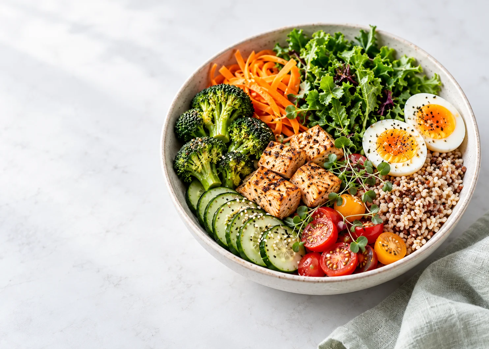
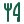

从你的生活出发
目标、可用时间与运动基础，一起考虑。
- 基础资料
- 生活习惯
- 健康情况

目标、可用时间与运动基础，一起考虑。

饮食与运动，按你的条件安排看懂建议为什么适合你
从认识自己开始
分三步填写，随时可以返回修改。
先找到能坚持的节奏，再把变化记下来。
这是一周参考。更新资料会重新生成安排；历史打卡只保留完成状态。
记录体重、饮食与活动，再留意变化。本次记录只在当前页面保留，刷新或离开后清空；需要保留请手动导出备份。
最近 14 天内最新的感受会参与调整；更早的记录保留用于回顾。
游客资料、体重、打卡和感受只在本页内存中保留，不自动写入浏览器存储或上传云端。刷新、重新打开、离开本网页或点击“结束体验并清空”会清空；站内返回修改会保留本次填写。需要保留或迁移时，可手动导出并导入备份。备份含健康相关信息，请妥善保管。旧版浏览器数据不会自动恢复，需单独确认恢复或删除；结束体验不会删除旧副本或已下载的备份。